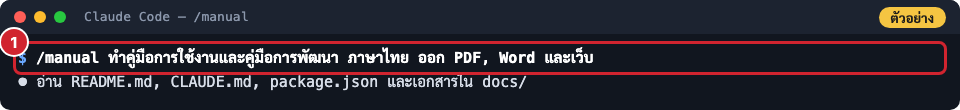
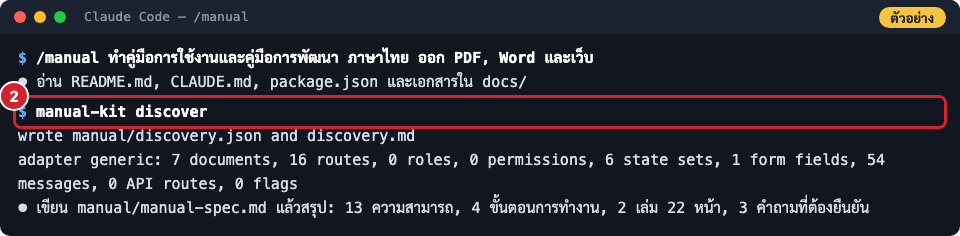
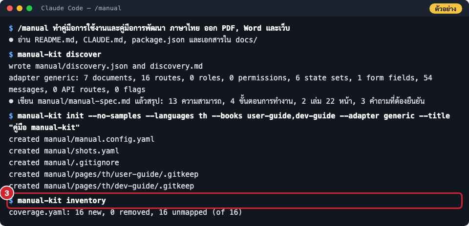
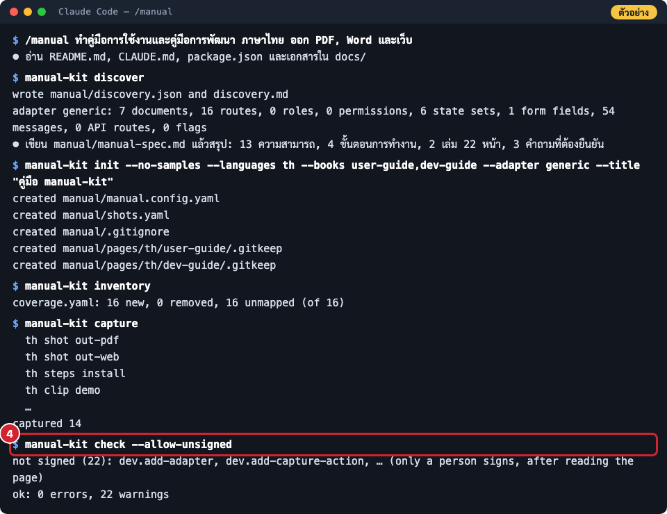
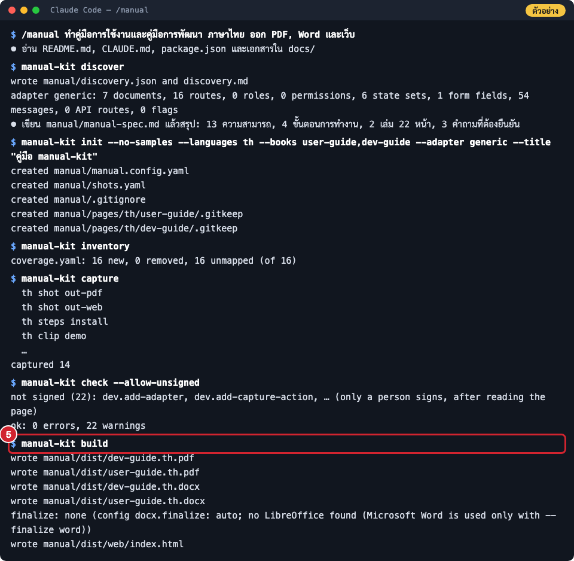

ทำคู่มือใหม่ด้วย /manual
สั่ง Claude ทำคู่มือทั้งเล่มด้วยคำสั่งเดียว แล้วรู้ว่าระหว่างทางมันทำอะไร ถามอะไร และส่งอะไรคืนมา
- สำหรับ
- ทีมที่ทำคู่มือ
- ใช้เวลา
- 15–20 นาทีต่อคู่มือ 3 หน้า
คำสั่ง /manual สั่งให้ Claude ทำคู่มือทั้งเล่มเองตั้งแต่ต้นจนจบ คุณไม่ต้องรู้คำสั่งของ manual-kit เลย
หน้านี้อธิบายวิธีสั่ง สิ่งที่ Claude ทำในแต่ละช่วง และสิ่งที่คุณต้องตอบ เพื่อให้รู้ว่ากำลังรออะไรอยู่และตรวจงานได้
ก่อนเริ่ม
- ติดตั้ง plugin แล้ว (ติดตั้ง plugin)
- ระบบของโครงการ รันในเครื่องได้ (README ของโครงการบอกวิธีรันยิ่งดี) Claude สร้างข้อมูลทดสอบเอง และ ไม่ใช้ระบบ production หรือข้อมูลจริงของลูกค้า
- ถ้ามีข้อมูลเอกสาร ให้เตรียมไว้: ชื่อลูกค้า ชื่อโครงการ เลขที่เอกสาร เวอร์ชัน ผู้อนุมัติ ช่องทางติดต่อ
ถ้าไม่บอก Claude จะใส่
(รอระบุ)ให้กรอกทีหลัง ไม่แต่งขึ้นเอง
ขั้นตอน
-
เปิด Claude Code ในโฟลเดอร์ของโครงการ (
cdไปที่ repo แล้วพิมพ์claude) -
พิมพ์
/manualตามด้วยสิ่งที่ต้องการเป็นประโยคธรรมดา เช่น/manual ทำคู่มือผู้ใช้ ภาษาไทย ออก PDF กับ Word /manual ทำคู่มือผู้ดูแลระบบ ภาษาไทย ออก PDF อย่างเดียว ลูกค้าคือ กรม... เลขที่เอกสาร XX-UM-001 /manual ทำคู่มือเจ้าหน้าที่ พร้อมภาพทีละขั้นและวิดีโอ ออกเป็นเว็บด้วยถ้า
/manualไม่ขึ้น ใช้ชื่อเต็ม/manual-kit:manual -
ตอบคำถามที่ Claude ถาม (ถามครั้งเดียวรวมกันตอนต้น) Claude จะถามก่อนเสมอเมื่อ
- ต้องใช้ API key ที่เสียเงิน เช่น ระบบที่เรียก AI หรือส่ง SMS ถ้าไม่อนุญาต Claude จะข้ามฟีเจอร์นั้นและบอกว่าหน้าไหนไม่มีภาพ
- ต้อง ติดตั้งโปรแกรม เช่น
brew install pandocสำหรับไฟล์ Word ถ้าตอบไม่ Claude จะทำเฉพาะสิ่งที่ทำได้ (PDF และเว็บไม่ต้องใช้โปรแกรมเพิ่ม)
-
รอ Claude ทำงาน ระหว่างนี้คุณจะเห็น Claude เรียกคำสั่งของ manual-kit ตามลำดับ ภาพด้านล่างเป็น ตัวอย่าง ที่เรียบเรียงจากคำสั่งและผลลัพธ์จริงตอนทำคู่มือเล่มนี้:
พิมพ์ /manual พร้อมสิ่งที่ต้องการ

พิมพ์ /manual พร้อมสิ่งที่ต้องการ Claude สแกนหลักฐาน (discover) แล้วเขียนสเปก

Claude สแกนหลักฐาน (discover) แล้วเขียนสเปก สร้างโครงคู่มือ (init) และรายการที่ต้องมีหน้า (inventory)

สร้างโครงคู่มือ (init) และรายการที่ต้องมีหน้า (inventory) เขียนหน้า ถ่ายภาพ แล้วตรวจจนไม่มีข้อผิด (check)

เขียนหน้า ถ่ายภาพ แล้วตรวจจนไม่มีข้อผิด (check) ออก PDF, Word และเว็บ

ออก PDF, Word และเว็บ
- อ่านรายงานตอนจบ Claude จะบอกไฟล์ที่ได้ รายการ
(รอระบุ)และตำแหน่งที่อยู่ ปัญหาของระบบที่เจอ และสิ่งที่ข้ามไปพร้อมเหตุผล
ลำดับงานที่ Claude ทำ (ตามสกิล manual):
| ช่วง | Claude ทำอะไร | คำสั่งของ manual-kit |
|---|---|---|
| อ่านโครงการ | README, CLAUDE.md, package.json, เอกสาร requirement / design | |
| สแกนหลักฐาน | หน้าจอ บทบาท สถานะของงาน ฟอร์ม ข้อความ API flag | discover |
| เขียนสเปก | manual/manual-spec.md แล้วสรุปให้ดู |
|
| สร้างโครง | config ข้อมูลเอกสาร ผลลัพธ์ รายการที่ต้องมีหน้า | init, inventory |
| รันระบบ | รันในเครื่องด้วยข้อมูลสมมติ จดทุกโปรเซสที่เปิด | |
| เขียนหน้า | ทีละหน้าตามแผนในสเปก | new-page |
| ถ่ายภาพ | ภาพหน้าจอ ภาพทีละขั้น วิดีโอ แล้วเปิดดูทุกภาพ | capture, encode |
| ตรวจและออกไฟล์ | ตรวจจนไม่มีข้อผิด ออก PDF / Word / เว็บ แล้วเปิดดูผลเอง | check, build |
| เก็บงาน | ปิดเซิร์ฟเวอร์และ container ที่ตัวเองเปิด (เฉพาะที่ตัวเองเปิด) |
ผลลัพธ์ที่ได้
ทุกอย่างอยู่ในโฟลเดอร์ manual/ ของโครงการ ให้ commit ไว้กับโค้ด เพื่อให้คู่มือตามโค้ดได้
| ไฟล์ | คืออะไร |
|---|---|
manual/dist/*.pdf, *.docx |
คู่มือส่งลูกค้า |
manual/dist/web/ |
เว็บคู่มือ (ไฟล์ static เปิด index.html หรืออัปโหลดขึ้นโฮสต์ไหนก็ได้) |
manual/manual-spec.md |
สเปกคู่มือ (ใช้คุยกับลูกค้าหรือทีมได้) |
manual/discovery.md |
หลักฐานที่สแกนได้จากโค้ด |
manual/pages/ |
เนื้อหาแต่ละหน้า (Markdown แก้เองได้) |
manual/media/ |
ภาพและวิดีโอ |
หน้ายังไม่ได้รับรอง ขั้นต่อไปคืออ่านทวนและรับรอง ดู ส่งมอบคู่มือให้ลูกค้า
ปัญหาที่พบบ่อย
| อาการ | สาเหตุ | วิธีแก้ |
|---|---|---|
| Claude บอกว่ารันระบบไม่ได้ | ไม่รู้วิธีรัน หรือต้องใช้ฐานข้อมูล/บริการที่ไม่มีในเครื่อง | บอกวิธีรันหรือฐานข้อมูลที่ต้องใช้ หรือเพิ่มวิธีรันใน README ของโครงการ ถ้ารันไม่ได้จริง Claude ทำคู่มือแบบไม่มีภาพและบอกไว้ในรายงาน |
| อยากเปลี่ยนแผนก่อนเขียนหน้า | Claude ทำต่อทันทีหลังสรุปสเปก | สั่ง /manual spec ก่อน (ดู อ่านและแก้สเปกคู่มือ) หรือบอกในคำขอว่า "ขอดูสเปกก่อน" |
| มีคู่มือเดิมอยู่แล้ว | manual/manual.config.yaml มีอยู่ |
Claude จะถือว่าเป็นการอัปเดต ถ้าต้องการเล่มใหม่ให้พูดว่า "ใหม่" ในคำขอ |